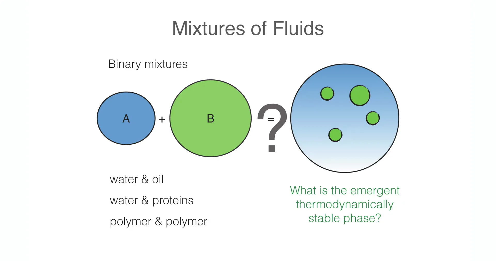
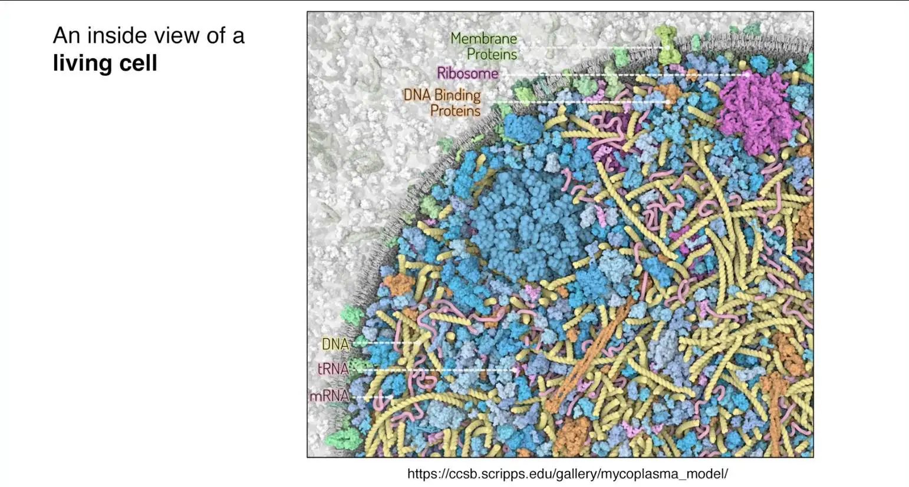
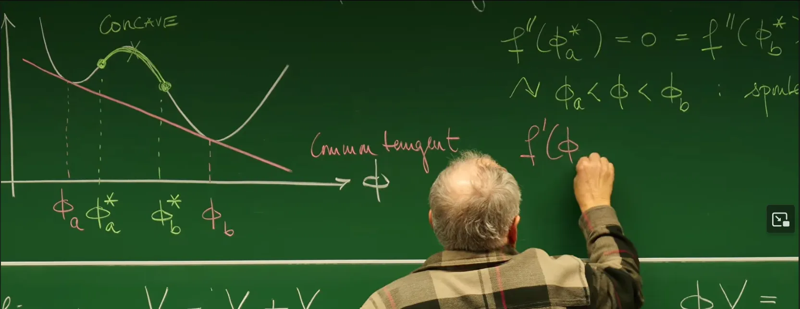
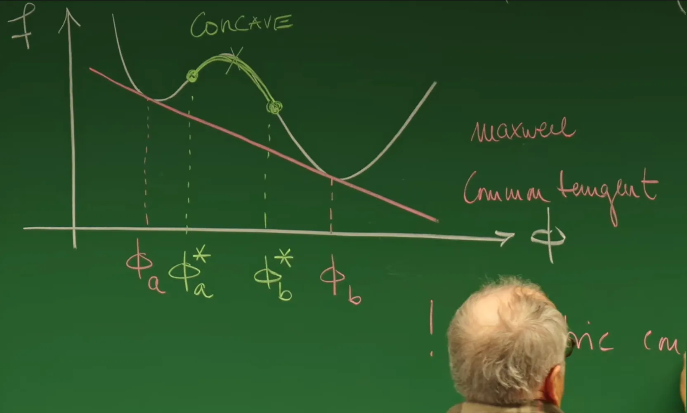
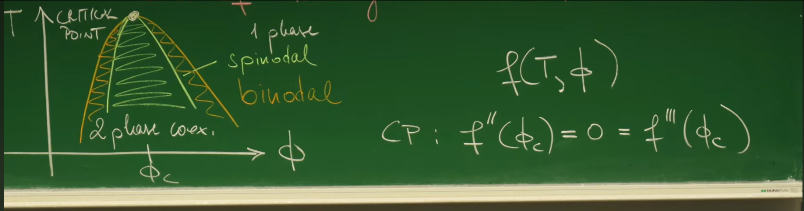

1. Introduction¶
From "The Solid Past" to "The Liquid Future"¶
In the traditional narrative of condensed matter physics, crystalline solids have long occupied the central position of theoretical research due to their perfect symmetry and static ordered structure. However, Professor Erwin Frey raised a highly philosophical viewpoint at the beginning of this lecture: "The past is solid, and the future is liquid." This statement is a metaphor for the rise of soft matter physics, revealing the paradigm shift in nature's organizational forms.
Reviewing Lecture 9 and Lecture 10, the course explored the dynamics of non-conserved order parameters (such as magnetization) through Ginzburg-Landau theory and the Allen-Cahn equation (Model A). In those systems, domain wall motion is curvature-driven, and droplets can directly shrink and annihilate through local spin flipping, without being constrained by mass conservation. However, when we turn our attention to living systems, soft matter, and fluid mixtures far from equilibrium, the physical constraints undergo fundamental changes. The interior of cells is filled with various fluid mixtures, in a highly crowded state. In this environment, matter cannot appear or disappear out of thin air but must follow the local mass conservation law.
Therefore, this lecture marks a shift in the course's focus: from interface dynamics of single-component or non-conserved systems, to the thermodynamic equilibrium properties of multi-component liquid mixtures. This is the physical foundation for understanding the formation mechanism of "membrane-less organelles" inside cells, and also the necessary path toward exploring conserved dynamics (Model B / Cahn-Hilliard equation), osmotic pressure effects, and Ostwald ripening processes in the next lecture.


The above two figures show binary mixture conceptual diagrams and the crowded environment inside cells
Biological Motivation - The Phase Separation Revolution Inside Cells¶
Before diving into mathematical derivations, it is necessary to understand the practical biological significance of this theoretical framework. Professor Frey specifically mentioned the landmark work published in Science in 2009 by Clifford Brangwynne and colleagues—research on P granules in the nematode C. elegans.
For a long time, the biology community generally believed that functional structures inside cells are mainly defined by lipid membranes (such as nuclear envelope, mitochondrial membrane). However, P granules, nucleolus, Cajal bodies, and similar structures, although not enclosed by membranes, can maintain unique composition and spatial locality. The experiments by Brangwynne et al. surprisingly discovered that these P granules exhibit typical liquid physical properties:
Wetting: They spread out like raindrops on glass when contacting the nuclear envelope, indicating the existence of contact angle and interfacial tension.
Fusion/Coalescence: Two contacting granules rapidly fuse into a larger sphere with reduced surface area—this is a typical feature of surface tension-driven behavior.
Dripping: Under shear force, they deform and even split, exhibiting fluid instabilities (such as Rayleigh-Plateau instability).
P Granule Fusion and Wetting Phenomena, Source: Brangwynne et al., Science 324:1729-1732 (2009)
These observations completely changed the paradigm of cell biology: some complex structures inside cells are not "assembled" by sophisticated molecular machines, but spontaneously formed through physical Liquid-Liquid Phase Separation (LLPS). This phase separation process is directly governed by thermodynamic principles—namely system free energy minimization.
This lecture will cover the thermodynamic foundations of liquid mixtures, starting from the most basic incompressible fluid assumption, establishing the Helmholtz free energy density function, deriving the convexity criterion for mixture phase separation, and analyzing in detail the famous Maxwell Construction. These static thermodynamic analyses will ultimately converge into phase diagrams describing coexistence regions, laying a solid static theoretical foundation for introducing the time dimension and establishing Cahn-Hilliard dynamical equations in the next lecture.
1. Thermodynamic Foundations of Multi-Component Mixtures¶
To physically and precisely describe cytoplasm—a "hodgepodge" containing proteins, RNA, lipids, water, and various other molecules—we must first establish a rigorous thermodynamic framework. Unlike ideal gases or simple single-component fluids, the thermodynamic behavior of liquid mixtures is not only controlled by temperature and pressure, but is also profoundly influenced by component concentrations and their interactions. This section will start from macroscopic thermodynamic potentials and, combined with the key "incompressibility" assumption in soft matter physics, gradually derive the core physical quantity describing phase separation behavior—Helmholtz free energy density.
1.1 Macroscopic State Variables and Gibbs Free Energy¶
Consider a thermodynamic system containing \(n+1\) components. To clearly distinguish solvent background from solute particles, components are usually labeled as \(i=0, 1, \dots, n\). In the biophysics context, by convention \(i=0\) represents Solvent (such as water), while \(i=1, \dots, n\) represent various Solutes (such as proteins, polymers, etc.).
Under typical experimental and biological conditions, the system is usually at constant environmental temperature \(T\) and environmental pressure \(P\). Therefore, the most suitable thermodynamic potential for describing the natural state of this system is the Gibbs Free Energy (\(G\)). The macroscopic state of the system is completely determined by the following set of variables:
-
Temperature (\(T\)): Determines the intensity of the system's thermal motion.
-
Pressure (\(P\)): Determines the mechanical equilibrium state of the system.
-
Particle number (\(N_i\)): The number of particles of each component \(i\), which is the basic variable describing mixture composition.
Therefore, Gibbs free energy \(G\) is a function of these variables: \(G = G(T, P, \{N_i\})\). According to the fundamental equation of thermodynamics, its total differential form is expressed as:
where each partial derivative term has clear physical meaning:
-
\(S = -\left(\frac{\partial G}{\partial T}\right)_{P, \{N_i\}}\) is the entropy of the system.
-
\(V = \left(\frac{\partial G}{\partial P}\right)_{T, \{N_i\}}\) is the total volume of the system.
-
\(\mu_i = \left( \frac{\partial G}{\partial N_i} \right)_{T, P, N_{j \neq i}}\) is the Chemical Potential of component \(i\), representing the energy change required to add one particle to the system at constant temperature and pressure while keeping other components unchanged.
To simplify analysis and focus on core physical mechanisms, this lecture mainly focuses on Binary Mixtures (\(n=1\)), where the system is simplified to only two components: solvent \(S\) and solute \(P\) (Particle). At this point, the system's state space is spanned by four variables \((T, P, N_S, N_P)\).
1.2 Molecular Volume and Incompressibility Assumption¶
In gas physics, volume \(V\) is a sensitive function of pressure and temperature (e.g., ideal gas equation of state \(PV=NkT\)). However, in liquid physics and soft matter research, liquids are usually regarded as Incompressible. This is an extremely strong physical constraint that greatly simplifies mathematical treatment while also changing the system's thermodynamic degrees of freedom.
Definition of Molecular Volume and Euler's Theorem¶
To quantitatively describe the relationship between volume and particle number, the concept of Molecular Volume is introduced. For solute \(P\) and solvent \(S\), their molecular volumes are defined as the partial derivatives of total volume \(V\) with respect to corresponding particle numbers:
The physical meaning here is: while keeping temperature, pressure, and other components unchanged, the amount by which total volume increases when adding one particle to the system. Since volume \(V\) is an Extensive Quantity with respect to particle numbers \(\{N_i\}\), meaning if all particle numbers are increased by a factor of \(\alpha\), volume correspondingly increases by a factor of \(\alpha\): \(V(\alpha N_S, \alpha N_P) = \alpha V(N_S, N_P)\). According to Euler's Homogeneous Function Theorem, differentiating with respect to \(\alpha\) and setting \(\alpha=1\), we derive the volume additivity formula:
This relation indicates that the total volume of the system strictly equals the sum of volumes occupied by each component.
Incompressibility Condition and Its Implications¶
In soft matter physics, the incompressibility assumption means: Molecular volumes \(v_P\) and \(v_S\) are constants independent of their thermodynamic state (\(T, P\) and concentration).
This assumption has two profound impacts on the system's thermodynamic properties:
1.Volume is no longer an independent variable: Once particle numbers \(N_P\) and \(N_S\) are determined, the system's total volume \(V\) is completely locked. This is fundamentally different from gas systems, where we can independently adjust volume and particle number.
2.Geometric constraint: The system's dynamical evolution is strictly constrained by the geometric constraint equation \(V = v_P N_P + v_S N_S\). This means particles cannot arbitrarily appear or disappear unless accompanied by corresponding volume changes or exchange between components (e.g., one large molecule displacing multiple water molecules).
In many theoretical models (such as lattice models or the famous Flory-Huggins theory), to further simplify calculations, it is usually assumed that solute and solvent have the same molecular volume \(v_P = v_S = v_0\). This is equivalent to viewing the liquid as composed of identical-sized "lattice sites," where each site is occupied by either a water molecule or a protein molecule—this symmetry greatly simplifies subsequent entropy calculations.
1.3 From Gibbs Free Energy to Helmholtz Free Energy Density¶
Since incompressibility locks the relationship between volume and particle number, directly using Gibbs free energy \(G\) containing the \(PV\) term to handle phase separation problems is often not intuitive enough. Especially when studying spatially non-uniform Phase Separation, the physical focus usually shifts from extensive quantities (total energy) to intensive quantities (energy per unit volume).
Through Legendre Transformation, connections between different thermodynamic potentials can be established. The known relationship between Gibbs free energy and Helmholtz free energy \(F\) is \(G = F + PV\). Since the system is incompressible, and \(F\) itself is also an extensive quantity, it can be written as volume \(V\) multiplied by an energy density function \(f\) per unit volume.
Introducing the dimensionless Volume Fraction (\(\phi\)) as the core order parameter:
Correspondingly, according to the normalization condition, the solvent's volume fraction is naturally \(1-\phi\).
This variable transformation is not just a mathematical substitution, but a transformation of physical pictures:
Microscopic perspective: Tracking the discrete behavior of hundreds of millions of \(N_P\) and \(N_S\) particles.
Field theory perspective: Focusing on a continuous scalar field \(\phi(\mathbf{x})\), representing the local concentration of solute at various spatial locations.
Using this variable, Gibbs free energy can be rewritten as:
where \(f(T, \phi)\) is the Helmholtz free energy density.
Physical Meaning and Simplification of Thermodynamic Potentials¶
The above formula reveals the key logic for studying phase transitions in incompressible fluids:
1.Decoupling of the pressure term: In \(G = V[P + f(T, \phi)]\), pressure \(P\) only appears as a linear term. If the system is under constant environmental pressure \(P\), then the \(P \cdot V\) term merely superimposes a linear background on total energy that is unrelated to the convexity of the mixed state (\(\phi\)) (or is a constant when total volume \(V\) is fixed).
2.Determining the core function: Therefore, the key to determining whether the system undergoes mixing or phase separation lies entirely in the geometric shape (i.e., convexity) of the Helmholtz free energy density function \(f(T, \phi)\) as it varies with volume fraction \(\phi\).
This conclusion simplifies the complex multi-variable thermodynamics problem to a single-variable function \(f(\phi)\) analysis problem. Subsequent Stability Analysis and Maxwell Construction will be entirely based on exploring the shape of the \(f(\phi)\) curve.
2. Mixing and Thermodynamic Stability Criteria¶
After establishing the Helmholtz free energy density \(f(\phi)\) with volume fraction \(\phi\) as the variable, this section will explore the core thermodynamic problem of multi-component systems: Stability of mixing. For a mixture of given concentration, will it maintain a uniform single-phase state, or will it spontaneously split into two phases of different concentrations? The answer to this question does not depend on microscopic molecular details, but is completely determined by the geometric shape (convexity/concavity) of the free energy density function \(f(\phi)\). By constructing a macroscopic mixing thought experiment, universal inequalities for judging phase separation occurrence can be derived.
2.1 Mixing Thought Experiment - Macroscopic Conservation Laws¶
To derive the mathematical criterion for stability, Professor Frey introduces a classical thermodynamic thought experiment. Consider two initially isolated fluid systems at the same temperature \(T\) and pressure \(P\):
-
System 1: Volume \(V_1\), solute volume fraction \(\phi_1\).
-
System 2: Volume \(V_2\), solute volume fraction \(\phi_2\).
Now merge these two systems into a new total system. Based on the incompressibility assumption established in the previous section, the mixing process must follow two macroscopic conservation laws:
1.Volume conservation: The total system volume \(V\) equals the sum of the two subsystem volumes.
2.Particle number conservation (i.e., solute volume conservation): The total solute amount after mixing equals the sum of parts before mixing. Let the average volume fraction after mixing be \(\phi\), then:
To describe the mixing ratio, introduce a dimensionless variable \(x\) representing the proportion of System 1 in total volume:
Using this variable, the average volume fraction \(\phi\) after mixing can be expressed as a weighted average of the two initial concentrations:
This linear relationship indicates that on the phase diagram (concentration axis), the state point of the mixed system must lie between \(\phi_1\) and \(\phi_2\).

Schematic of mixing thought experiment. The blackboard shows the process of two subsystems with different concentrations (\(\phi_1, \phi_2\)) and volumes (\(V_1, V_2\)) mixing to generate a uniform system (\(\phi, V\)), or the reverse DMIX (demixing) process, and lists volume and particle number conservation relations.
2.2 Free Energy Competition - Mixed State vs. Separated State¶
According to the second law of thermodynamics, under isothermal isochoric conditions, the system always evolves to the state of lowest Helmholtz free energy. Therefore, judging whether the system mixes requires comparing the total free energy of "mixed state" and "separated state."
Free energy of separated state (Demixed State): Assume the system maintains macroscopic phase separation, i.e., one part of the volume maintains concentration \(\phi_1\), another part maintains concentration \(\phi_2\). At this point the system's total free energy is the simple sum of the two subsystems' free energies (neglecting interfacial energy, which is reasonable in the macroscopic limit):
Using volume fraction \(x\), this expression can be rewritten as:
Geometrically, this corresponds to a certain point on the Chord connecting points \((\phi_1, f(\phi_1))\) and \((\phi_2, f(\phi_2))\) on the free energy density curve \(f(\phi)\).
Free energy of mixed state (Mixed State): Assume the system is completely uniformly mixed, forming a single homogeneous phase with concentration everywhere equal to the average value \(\phi\). At this point the system's total free energy is:
Geometrically, this corresponds to a certain point on the free energy density function curve (Curve).
2.3 Global Stability - Convexity Condition¶
Whether the system ultimately chooses mixing or separation depends on which state has lower free energy.
Mixing Criterion:
If for any initial concentrations \(\phi_1, \phi_2\) and any mixing ratio \(x\), the mixed state's free energy is always lower than the separated state's free energy, i.e.:
Substituting expressions and canceling common factor \(V\), we obtain the inequality:
This is precisely the mathematical definition of a Convex Function.
Physical conclusion: If the free energy density curve \(f(\phi)\) is globally convex (like a bowl), then no matter how mixing occurs, the homogeneous state is always the most stable, and the system will not undergo phase separation.
Instability and Demixing: Conversely, if \(f(\phi)\) exhibits Concave characteristics in certain concentration ranges (like a hill), i.e., satisfying:
This means the energy after mixing is higher than maintaining the separated state. At this point, the uniform solution is thermodynamically unstable, and the system will spontaneously reduce total energy through "reverse mixing"—i.e., phase separation. The system will split into two coexisting phases, so that the system's total free energy falls on the lower "chord" rather than the higher "arc."

Geometric stability criterion. Left figure shows convex function (Convex), mixed state (curve) energy lower than separated state (chord), system tends to mix; right figure shows concave function (Concave), mixed state energy higher than separated state, system tends to demix.
2.4 Local Stability and Spinodal Region¶
The above convexity condition provides a criterion for global stability. To more precisely describe the system's response to small perturbations, the local properties of the free energy function need to be examined. For smooth free energy functions, Taylor expansion can be used to analyze free energy changes caused by small concentration fluctuations \(\delta \phi\):
This yields the criterion for local stability:
Locally Stable: \(\frac{\partial^2 f}{\partial \phi^2} > 0\). At this point the free energy curve is locally convex, small fluctuations will increase system energy, so fluctuations are suppressed, and the solution maintains metastable or stable state.
Locally Unstable: \(\frac{\partial^2 f}{\partial \phi^2} < 0\). At this point the free energy curve is locally concave, small fluctuations will cause system energy to decrease. This means any infinitesimal thermal noise will be spontaneously amplified, leading to rapid system destabilization.
This region where the second derivative is negative is called the Spinodal Region. The boundary of this region is defined by the zeros of the second derivative (i.e., inflection points of the curve):
These two inflection points \(\phi_A^*\) and \(\phi_B^*\) are the so-called Spinodal Points. In the region between \(\phi_A^*\) and \(\phi_B^*\), the system undergoes Spinodal Decomposition, a rapid phase separation process driven by diffusion that does not require overcoming nucleation barriers.
3. Maxwell Construction and Phase Equilibrium¶
In the previous section, the analysis established that the convexity of free energy density function \(f(\phi)\) is the core criterion for judging mixture stability. When temperature decreases or interactions strengthen, the free energy curve often exhibits a non-convex "Double-Well" shape. This means the system is unstable in the intermediate concentration range and will spontaneously separate into two phases of different concentrations.
This leads to a key quantitative question: What exactly are the concentrations of the two coexisting phases that the system ultimately separates into? To solve this problem, this section will introduce the famous Maxwell Construction. This method is not only an elegant geometric operation, but also profoundly embodies the physical conditions that thermodynamic equilibrium must simultaneously satisfy.
3.1 Double-Well Potential Energy Surface and Local Instability¶
Consider a typical binary mixture free energy density curve (e.g., the Flory-Huggins theory form at low temperature), characterized by a local hump in the middle region. This non-convexity leads to the complexity of the system's phase behavior.

Double-well free energy curve and concave region. \(f(\phi)\) exhibits concave characteristics in the middle region. The green points marked as \(\phi_a^*\) and \(\phi_b^*\) are inflection points of the curve (\(f''=0\)), which define the Spinodal region. Within this region, the system is absolutely unstable to small fluctuations.
Spinodal points (\(\phi_a^*, \phi_b^*\)): Defined as points where the second derivative of the free energy curve is zero, i.e., \(f''(\phi) = 0\). These two points define the Spinodal instability region. In the range \(\phi_a^* < \phi < \phi_b^*\), since \(f'' < 0\), any infinitesimal concentration fluctuation can lower the system's total energy, leading to spontaneous phase separation (Spinodal decomposition).
However, merely avoiding the Spinodal region is not sufficient to guarantee the system's thermodynamic stability. Outside the Spinodal points, although the system is locally stable to small perturbations (\(f'' > 0\)), it may still be in a Metastable state where free energy is not globally minimal.
3.2 Common Tangent Construction¶
To determine the system's global equilibrium state, we must find the concentration combination that minimizes total free energy. According to the mixing rule, the total free energy after separating into two phases lies on the chord connecting the two phase points. To minimize energy, this chord must be located at the lowest position of the free energy curve.
Geometrically, this means we need to find a line that is simultaneously tangent to the free energy curve at two different points \(\phi_a\) (dilute phase) and \(\phi_b\) (concentrated phase). This line is called the Common Tangent.

Maxwell common tangent construction. The red line is simultaneously tangent to the two low points \(\phi_a\) and \(\phi_b\) of the free energy curve. This common tangent represents the total free energy of the system after phase separation, which is always lower than the single-phase free energy curve (green solid line), indicating that phase separation is thermodynamically favorable.
According to geometric relations, for a line to be simultaneously tangent to a curve at two points, the following two mathematical conditions must be satisfied:
1.Equal Slopes: The slopes at the two tangent points must be equal.
2.Common Tangent Condition (Common Intercept/Slope): The tangent line equation at \(\phi_a\) must pass through point \((\phi_b, f(\phi_b))\). In other words, the geometric slope of the line connecting the two points must equal the tangent slope at that point.
These two equations constitute a closed nonlinear system of equations for solving equilibrium concentrations \(\phi_a\) and \(\phi_b\).
3.3 Physical Interpretation - Balance of Chemical Potential and Osmotic Pressure¶
The Maxwell construction works because it is actually the direct geometric projection of thermodynamic equilibrium conditions. Professor Frey points out that the above geometric conditions respectively correspond to two core physical constraints of phase equilibrium: material diffusion equilibrium and mechanical equilibrium.
1. Exchange Chemical Potential Equilibrium (Slope Condition)
Define the Exchange Chemical Potential (\(\mu\)) as the derivative of free energy density with respect to concentration:
Physically, it represents the energy cost required to replace one solvent molecule with one solute molecule. Therefore, the geometric equal slope condition \(f'(\phi_a) = f'(\phi_b)\) directly implies equal chemical potential of two phases:
This is the necessary condition for matter to stop net flow between two phases.
2. Osmotic Pressure Equilibrium (Intercept Condition)
According to Legendre transformation, the intercept of the tangent line on the \(y\)-axis has specific thermodynamic meaning. In incompressible fluids, this term corresponds to the negative of Osmotic Pressure (\(\Pi\)) (or related quantity, depending on reference state definition).
Mathematically, slightly rearranging the common tangent equation yields:
The expression \(f - \phi f'\) is precisely the thermodynamic potential related to pressure. Therefore, the geometric common tangent condition actually means equal osmotic pressure of two phases:
This is the necessary condition for the interface between two phases to maintain mechanical stability.
Conclusion: Maxwell construction is not merely a drawing technique—it is equivalent to finding coexisting phase states that simultaneously satisfy chemical equilibrium (\(\Delta \mu = 0\)) and mechanical equilibrium (\(\Delta \Pi = 0\)).
3.4 Summary of Stability Regions¶
Through the equilibrium concentrations \(\phi_a\) and \(\phi_b\) (i.e., Binodal points) determined by Maxwell construction, combined with the previous Spinodal points \(\phi_a^*\) and \(\phi_b^*\), the phase diagram can be clearly divided into three regions with distinctly different physical properties:

Complete classification of stability regions. The figure clearly marks three types of regions:
1.Binodal points (\(\phi_a, \phi_b\)): Coexisting phase concentrations determined by common tangent.
2.Metastable region: Located between Binodal points and Spinodal points (yellow marked). In this region, nucleation barriers must be overcome for phase transition to occur.
3.Unstable region: Located between two Spinodal points (green shaded). In this region, the system undergoes spontaneous Spinodal decomposition.
1. Stable region (Stable / One-phase) Range: \(\phi < \phi_a\) or \(\phi > \phi_b\). In this region, the free energy curve itself constitutes the lower boundary of the convex hull. The uniformly mixed state is the globally lowest energy state, and the system will not undergo phase separation.
2. Metastable region (Metastable / Nucleation region) Range: \(\phi_a < \phi < \phi_a^*\) and \(\phi_b^* < \phi < \phi_b\). In this region, although \(f''(\phi) > 0\) keeps the system locally stable to small perturbations, its free energy is higher than the phase-separated state corresponding to the common tangent (globally unstable). The system requires sufficiently large fluctuations (such as forming critical nuclei) to overcome barriers—this mechanism is called Nucleation and Growth.
3. Unstable region (Unstable / Spinodal region) Range: \(\phi_a^* < \phi < \phi_b^*\). In this region, \(f''(\phi) < 0\). The uniform state is inherently unstable, and any thermal fluctuation will cause free energy to decrease and be rapidly amplified. The system spontaneously forms characteristic bicontinuous stripe structures or droplets through the Spinodal decomposition mechanism.
4. Phase Diagram Construction and Critical Phenomena¶
In the previous sections, analysis mainly focused on the free energy density function \(f(\phi)\) at fixed temperature and its geometric features. However, thermodynamic properties—especially the competition between entropy and enthalpy—strongly depend on temperature \(T\). As temperature changes, the shape of the free energy curve evolves: at high temperatures entropy dominates, and the curve is usually convex (single well); at low temperatures enthalpy (interactions) dominates, and the curve exhibits a double-well shape.
By systematically varying temperature \(T\), and projecting the coexistence concentrations \(\phi_a, \phi_b\) determined by Maxwell construction at each temperature, as well as the instability concentrations \(\phi_a^*, \phi_b^*\) determined by inflection points, onto the \(T-\phi\) plane, a Phase Diagram describing the complete picture of system phase behavior can be constructed.
4.1 Binodal Line and Spinodal Line¶
The phase diagram divides thermodynamic parameter space into regions of distinctly different properties, with boundaries defined by two key curves:
1.Binodal Line (Coexistence Curve): The trajectory connecting equilibrium coexistence concentrations \(\phi_a(T)\) and \(\phi_b(T)\) at different temperatures.
Physical meaning: It is the thermodynamic boundary between the one-phase region and two-phase coexistence region. Outside this line, the system is in a thermodynamically stable homogeneous state.
2.Spinodal Line (Instability Curve): The trajectory connecting Spinodal points \(\phi_a^*(T)\) and \(\phi_b^*(T)\) at different temperatures.
Physical meaning: It lies inside the Binodal line, defining the boundary between Metastable and Unstable regions. Inside this line, the diffusion coefficient becomes negative, and the system is unstable to any small fluctuation (Spinodal decomposition occurs).

Phase diagram of a typical binary mixture. Vertical axis is temperature \(T\), horizontal axis is volume fraction \(\phi\).
Outer solid line (Binodal): Defines the single-phase region (1 phase) and two-phase region.
Inner dashed line (Spinodal): Defines the metastable region (Metastable, yellow shaded) and unstable region (Unstable, green shaded).
CP (Critical Point): Critical point, where both lines converge.
In typical phase diagrams (such as systems with Upper Critical Solution Temperature UCST), these two curves usually present an inverted "U" shape and are tangent at the apex.
4.2 Critical Point¶
As temperature increases, mixing entropy (favoring uniform mixing) gradually overcomes interaction enthalpy (favoring separation). This causes the two arms of the Binodal line (dilute and concentrated phases) to gradually approach, eventually merging at a specific temperature \(T_c\) and concentration \(\phi_c\). This special point is called the Critical Point (CP).
Physical characteristics: At the critical point, the properties of the two phases (density, composition) become completely identical, and the macroscopic phase interface disappears. The system is in a delicate critical state, where correlation length diverges, and Critical Opalescence occurs, i.e., long-range density fluctuations cause enhanced light scattering.
Mathematical definition: Geometrically, the critical point corresponds to the moment when the free energy curve becomes "extremely flat." At this point, \(f(\phi)\) not only has coinciding inflection points (second derivative equals zero), but this point is also an extremum of inflection points (third derivative equals zero). As long as the fourth derivative is greater than zero, the system is locally stable at this point (but in the critical sense). Mathematical criteria are:
5. Case Study - Liquid-Liquid Phase Separation Inside Cells¶
At the end of this lecture, the theoretical perspective returns from abstract thermodynamics to concrete biological problems. The localization problem of P granules in C. elegans mentioned in the introduction is a wonderful application of phase separation thermodynamics in non-equilibrium biological systems. Professor Frey, combined with research by Brangwynne et al. (2009), demonstrates how cells use phase diagram principles to organize intracellular materials.
![Experimental evidence ruling out dominant role of cytoplasmic flow in localization. (A) Microscopy shows P granules (green) gradually localizing to embryo posterior pole (P) over time. (B-D) Particle Image Velocimetry (PIV) and trajectory tracking show that although significant cytoplasmic flow exists in the embryo (yellow arrows), and P granules move with it, their movement is bidirectional. (F) Quantitative statistics show that Net Flux across the embryo midline caused by flow is nearly zero. This result negates the traditional "active transport/flow transport" model and provides key counter-evidence for the subsequently proposed "controlled dissolution and condensation" phase transition model. Source: Brangwynne et al., Science 324:1729-1732 (2009)](../../../cn/assets/images/11_010_f13b0b47-a70a-4803-9abc-e4fa13fb7bf4.jpg)
5.1 Spatially Position-Dependent Thermodynamics¶
During C. elegans embryo development, P granules (droplets rich in RNA and proteins) are initially uniformly distributed, then rapidly localize to the embryo's Posterior, thereby determining germ cell fate. Traditional biological views might consider this the result of motor proteins "carrying" granules, but experimental evidence negates the active transport model.
Physical mechanism: Controlled dissolution and condensation Research by Brangwynne et al. revealed that P granule localization is actually a phase transition process. Cells regulate local chemical environments to change the thermodynamic stability of P granule components in cytoplasm.
Biological mapping of phase diagram: In the biological context, the "temperature" axis in phase diagrams can be replaced by regulatory protein concentration (such as MEX-5). These proteins change the phase diagram's position or shape by altering effective interaction strength between P granule components (\(\chi\) parameter).
5.2 Polar Protein Regulation of Binodal Points¶
Intracellular polar protein MEX-5 forms a concentration gradient in the embryo (high anterior, low posterior). This gradient causes the Saturation Concentration (\(C_{sat}\)) of P granule components—i.e., Binodal points on the phase diagram—to vary spatially.
1.Embryo Anterior:
-
High concentration of MEX-5 inhibits attractive interactions between P granule components (equivalent to raising effective temperature).
-
Causes saturation concentration \(C_{sat}\) to increase.
-
Result: Actual cytoplasmic concentration \(C_{cyt} < C_{sat}\). System is in one-phase region (outside Binodal line), existing P granules become unstable and dissolve (Dissolution), components return to cytoplasm.
2.Embryo Posterior:
-
Low concentration of MEX-5 allows strong interactions between P granule components (equivalent to lowering effective temperature).
-
Causes saturation concentration \(C_{sat}\) to decrease.
-
Result: Actual cytoplasmic concentration \(C_{cyt} > C_{sat}\). System enters two-phase coexistence region (inside Binodal line), cytoplasm is supersaturated, P granules condense (Condensation) and grow.
Conclusion: Cells do not physically move each granule, but by regulating thermodynamic parameters (solubility/Binodal points) spatially, use diffusive flux to transport material from anterior (dissolution source) to posterior (condensation sink). This is an extremely efficient self-organization mechanism based on physical principles.
Although thermodynamic phase diagrams successfully explain the static question of "where" P granules "tend to" appear, they cannot describe the speed of droplet formation, size distribution, and coarsening processes. To answer these dynamic questions, the time dimension needs to be introduced to establish dynamical equations describing conserved field evolution. This is exactly the topic of the next lecture (Lecture 12)—Cahn-Hilliard Equation (Model B).
6. Code Practice - Visualization of Phase Diagram and Free Energy Surface¶
The code practice will use the Cahn-Hilliard free energy model (including entropy and enthalpy contributions) to generate data, plotting the system's Phase Diagram and Free Energy Surface. This practice aims to transform the abstract mathematical derivations from previous sections into concrete physical images.
1.Reproduce macroscopic results of Maxwell construction: By calculating the Binodal Line and Spinodal Line, construct the temperature-concentration phase diagram. This will intuitively display the system's stability regions (stable, metastable, unstable) at different temperatures.
2.Display evolution of free energy landscape: Through 3D surface plots, dynamically display how the free energy density function \(f(\phi)\) evolves from a single potential well (convex function) at high temperature to a double potential well (non-convex function) at low temperature as temperature \(T\) changes, thereby revealing the thermodynamic driving force of phase separation.
"""
Thermodynamics and Phase Separation in Liquid Mixtures - Visualization
Phase Diagram and 3D Free Energy Surface
"""
import numpy as np
import matplotlib.pyplot as plt
from matplotlib.colors import LinearSegmentedColormap
from mpl_toolkits.mplot3d import Axes3D
import warnings
warnings.filterwarnings('ignore')
# Global Style Settings - Dark Theme
plt.style.use('dark_background')
plt.rcParams.update({
'figure.facecolor': '#000000',
'axes.facecolor': '#000000',
'axes.edgecolor': '#3a3a5a',
'axes.labelcolor': '#e0e0ff',
'text.color': '#e0e0ff',
'xtick.color': '#8080a0',
'ytick.color': '#8080a0',
'grid.color': '#2a2a4a',
'font.size': 12,
'axes.titlesize': 16,
'axes.labelsize': 14,
'font.family': 'sans-serif',
})
# Custom Color Scheme
COLORS = {
'primary': '#00d4ff',
'secondary': '#ff6b6b',
'accent': '#a855f7',
'success': '#22c55e',
'warning': '#f59e0b',
}
def plot_phase_diagram_and_free_energy():
"""Plot Phase Diagram and 3D Free Energy Surface"""
fig = plt.figure(figsize=(18, 8), facecolor='#000000')
gs = fig.add_gridspec(1, 2, wspace=0.3)
# Left: Phase Diagram (T vs c)
ax1 = fig.add_subplot(gs[0])
T = np.linspace(0.1, 1.2, 100)
c_spinodal_low = 0.5 - 0.3 * np.sqrt(1 - T/1.2)
c_spinodal_high = 0.5 + 0.3 * np.sqrt(1 - T/1.2)
c_binodal_low = 0.5 - 0.45 * np.sqrt(1 - T/1.2)
c_binodal_high = 0.5 + 0.45 * np.sqrt(1 - T/1.2)
# Fill regions
ax1.fill_betweenx(T, c_binodal_low, c_spinodal_low, alpha=0.5,
color=COLORS['warning'], label='Metastable Region')
ax1.fill_betweenx(T, c_spinodal_high, c_binodal_high, alpha=0.5,
color=COLORS['warning'])
ax1.fill_betweenx(T, c_spinodal_low, c_spinodal_high, alpha=0.6,
color=COLORS['secondary'], label='Spinodal Region')
# Plot lines
ax1.plot(c_binodal_low, T, '-', color=COLORS['primary'], linewidth=3, label='Binodal Line')
ax1.plot(c_binodal_high, T, '-', color=COLORS['primary'], linewidth=3)
ax1.plot(c_spinodal_low, T, '--', color=COLORS['secondary'], linewidth=2.5, label='Spinodal Line')
ax1.plot(c_spinodal_high, T, '--', color=COLORS['secondary'], linewidth=2.5)
# Critical Point
ax1.scatter([0.5], [1.2], s=300, marker='*', c=[COLORS['accent']],
edgecolors='white', linewidths=2.5, zorder=5, label='Critical Point')
ax1.annotate('Critical Point\n(Tc, cc)', (0.5, 1.2), textcoords="offset points",
xytext=(60, -10), ha='left',
fontsize=13, fontweight='bold', color=COLORS['accent'],
bbox=dict(boxstyle='round,pad=0.5', facecolor='#1a1a2e', edgecolor=COLORS['accent'], linewidth=2))
ax1.set_xlabel('Concentration c', fontweight='bold')
ax1.set_ylabel('Temperature T / Tc', fontweight='bold')
ax1.set_title('Binary Phase Diagram', fontweight='bold', fontsize=18, pad=15)
ax1.legend(loc='upper right', framealpha=0.9, fontsize=11, fancybox=True, shadow=True)
ax1.set_xlim(0, 1)
ax1.set_ylim(0, 1.35)
ax1.grid(True, alpha=0.3, linestyle='--')
# Right: 3D Free Energy Surface
ax2 = fig.add_subplot(gs[1], projection='3d', facecolor='#000000')
# Construct free energy surface f(c, T)
c_grid = np.linspace(0, 1, 120)
T_grid = np.linspace(0.3, 1.2, 100)
C, TT = np.meshgrid(c_grid, T_grid)
# Temperature dependent free energy
Tc = 1.2
with np.errstate(divide='ignore', invalid='ignore'):
entropy = TT * (C * np.log(C + 1e-10) + (1 - C) * np.log(1 - C + 1e-10))
F = (1 - TT/Tc) * C**2 * (1 - C)**2 + 0.1 * entropy
F = np.nan_to_num(F, nan=0.0, posinf=0.0, neginf=0.0)
# Create gradient colormap
surf_cmap = LinearSegmentedColormap.from_list(
'surface', [
'#0a0a1a', # Very dark blue
'#1e40af', # Dark blue
'#3b82f6', # Blue
'#22d3ee', # Cyan
'#a5f3fc', # Light cyan
'#fbbf24', # Yellow
], N=256
)
# Plot surface
surf = ax2.plot_surface(C, TT, F, cmap=surf_cmap, alpha=0.9,
linewidth=0, antialiased=True,
rstride=1, cstride=1, shade=True)
# Add contour projection at the bottom
contour_offset = F.min() - 0.03
ax2.contour(C, TT, F, zdir='z', offset=contour_offset,
levels=20, cmap='cool', alpha=0.7, linewidths=1.5)
# Labels and title
ax2.set_xlabel('Concentration c', labelpad=12, fontweight='bold')
ax2.set_ylabel('Temperature T/Tc', labelpad=12, fontweight='bold')
ax2.set_zlabel('Free Energy F', labelpad=12, fontweight='bold')
ax2.set_title('Free Energy Surface F(c, T)', fontweight='bold', fontsize=18, pad=20)
# Adjust viewing angle
ax2.view_init(elev=25, azim=-65)
# Customize 3D pane appearance
ax2.xaxis.pane.fill = False
ax2.yaxis.pane.fill = False
ax2.zaxis.pane.fill = False
ax2.xaxis.pane.set_edgecolor('#3a3a5a')
ax2.yaxis.pane.set_edgecolor('#3a3a5a')
ax2.zaxis.pane.set_edgecolor('#3a3a5a')
ax2.grid(True, alpha=0.2)
# Add colorbar
cbar = fig.colorbar(surf, ax=ax2, shrink=0.6, aspect=15, pad=0.1)
cbar.set_label('Free Energy', rotation=270, labelpad=20, fontweight='bold')
# Main title
fig.suptitle('Cahn-Hilliard Model',
fontsize=20, fontweight='bold', color='white', y=0.98)
plt.tight_layout(rect=[0, 0, 1, 0.96])
return fig
# Main Entry Point
if __name__ == "__main__":
fig = plot_phase_diagram_and_free_energy()
plt.savefig('phase_diagram_and_free_energy.png', dpi=300, bbox_inches='tight')

Left figure (Binary Phase Diagram): Shows the relationship between temperature \(T\) and concentration \(c\).
Binodal Line (solid line): Encloses the coexistence region. Within this region, the mixture tends to separate into two phases.
Spinodal Line (dashed line): Defines the thermodynamically unstable region (Spinodal Region). Within this region, small concentration fluctuations spontaneously amplify (i.e., Spinodal decomposition).
Critical Point (star): The highest temperature point where phase separation occurs.
Right figure (Free Energy Surface): Shows how free energy density \(F(c, T)\) varies with concentration and temperature. At low temperatures, the free energy curve exhibits a "double potential well" structure, leading to phase separation. At high temperatures (\(T > T_c\)), the free energy curve is a single potential well, and the mixture is in a uniform steady state.
Summary¶
This lecture revealed the physical essence of phase separation in liquid mixtures by introducing a rigorous thermodynamic framework. Starting from the incompressible fluid assumption, the Helmholtz free energy density with volume fraction \(\phi\) as the variable was derived. Through stability analysis, Convexity was established as the core criterion for system stability. Maxwell construction is not only an elegant geometric tool, but also profoundly embodies the principles of equal chemical potential and equal osmotic pressure in multi-phase equilibrium. Ultimately, these theories converge into phase diagrams describing material states, explaining a wide range of phenomena from industrial oil-water mixing to P granule formation inside cells.
This lecture mainly solves Statics problems: given a system, what is its final equilibrium state? Does it phase separate? What are the equilibrium concentrations after separation?
However, physics is equally concerned with Dynamics processes: how exactly does the system evolve from an unstable uniform state to the separated equilibrium state?
-
If it's Spinodal decomposition, how do droplets emerge and form characteristic stripes?
-
If it's nucleation and growth, what determines the droplet growth rate?
-
How do droplets interact with each other (e.g., Ostwald ripening)?
In the next lecture, the course will introduce time variables and establish non-equilibrium dynamical field theory. The focus will be on comparing two basic dynamical models:
- Model A (Allen-Cahn): Used to describe non-conserved order parameters (such as magnetism). Its interface dynamics has been preliminarily explored in previous lectures.
- Model B (Cahn-Hilliard): Used to describe conserved order parameters (such as the mixture concentration \(\phi\) discussed in this lecture, constrained by particle number conservation).
The next lecture will delve into how the introduction of conservation laws fundamentally changes the dynamics of phase separation, reveal the role of Osmotic Pressure, and derive the Cahn-Hilliard equation leading to diffusion-controlled coarsening processes. This will provide a complete theoretical picture for understanding the dynamic evolution of intracellular droplets.